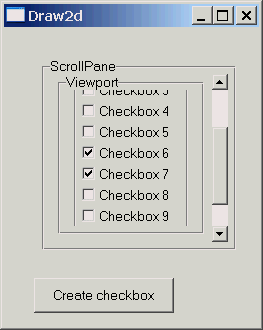

| Example 3 - Clicking and Scrolling | |
|
In this example, a Button is used to create CheckBoxes inside a ScrollPane. The button and scrollpane are placed absolutely inside the contents figure by simply setting their bounds; no layout manager is used there. However, the view must have a Layout, or its preferred size will not get calculated, and scrolling will not work correctly. The button's action listener will get called each time the user clicks on the button. The listener will create a new CheckBox and add it to the view. A vertical scrollbar will appear when the checkboxes cannot all be displayed at once in the pane. |
 |
01 02 03 04 05 06 07 08 09 10 11 12 13 14 15 16 17 18 19 20 21 22 23 24 25 26 27 28 29 30 31 32 33 34 35 36 37 38 39 40 41 42 43 44 45 46 47 |
import org.eclipse.swt.widgets.Shell;
import org.eclipse.swt.widgets.Display;
import org.eclipse.draw2d.*;
import org.eclipse.swt.SWT;
import org.eclipse.draw2d.geometry.*;
public class Demo3 {
static int count = 1;
public static void main(String args[]){
Shell shell = new Shell();
shell.setSize(350,350);
shell.open();
shell.setText("Demo 3");
LightweightSystem lws = new LightweightSystem(shell);
IFigure panel = new Figure();
lws.setContents(panel);
ScrollPane scrollpane = new ScrollPane();
scrollpane.setBounds(new Rectangle(30,30,210,200));
scrollpane.getViewport().setBorder(new GroupBoxBorder("Viewport"));
scrollpane.setBorder(new GroupBoxBorder("ScrollPane"));
|